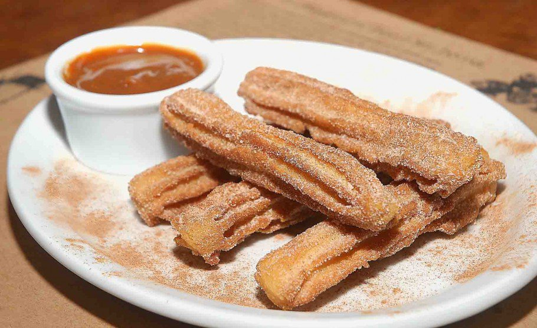

Churros (Chaves)

Ingredientes
- 2 xícaras (chá) de água;
- 4 colheres (sopa) de manteiga;
- 4 colheres (sopa) de açúcar;
- 2 xícaras (chá) de farinha de trigo;
- 4 ovos;
- Açúcar e canela em pó para polvilhar; e
- 1 xícara (chá) de doce de leite cremoso.
Modo de preparo
Coloque a água, a manteiga e o açúcar em uma panela e deixe ferver em fogo médio;
Assim que levantar fervura, adicione a farinha e misture bem com uma colher de pau até formar uma massa lisa e homogênea;
Transfira para uma tigela e espalhe para esfriar mais rápido;
Adicione os ovos, um por vez, mexendo bem até incorporar e formar uma massa homogênea;
Coloque em um saco de confeiteiro com bico pitanga e pingue fios da massa em uma panela com óleo quente, cortando em pedaços conforme for pingando;
Frite, aos poucos, até dourarem;
Escorra sobre papel-toalha; e
Polvilhe com açúcar e canela em pó e sirva acompanhado de doce de leite.